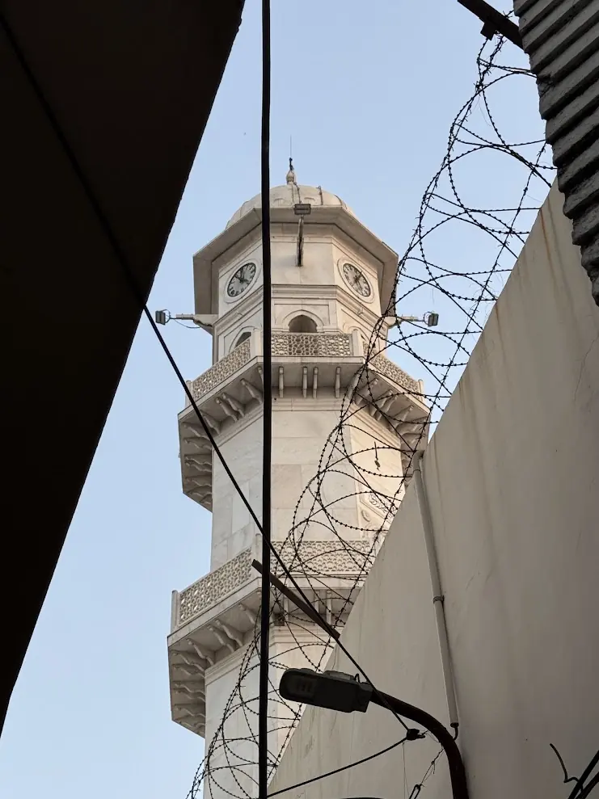

Chapter 14 of 22
A Voice from the Minaret

It’s 4 a.m. in Qadian. The cool predawn air feels calm and peaceful. The streets are quiet, and even the morning birds have yet to awaken. At Sara-i-Waseem, the occasional creak of doors opening and closing signals that some, like our group, are preparing for an early start. Our goal? To reach the sacred sites at Darul Masih before dawn and offer Tahajjud and Nawafil prayers.
The glowing Minarat-ul-Masih stands as a guide, leading us through the stillness. In Qadian, one of its most beautiful features is that you’re always near a place of worship. Life revolves around the calls to prayer, and the minaret, positioned in the heart of the Ahmadiyya Muhalla, constantly draws your attention to Allah.
Dressed in light jackets, our heads covered, and our ablution completed, we made our way toward Darul Masih.
The Blessings of Worship
Excitement filled my heart as I walked. Today, I had the unimaginable honor of calling the Adhan at Masjid Aqsa. This was something I had dreamed of for years, buried deep in my heart—a wish I never thought would come true. I felt unworthy, but this was Allah’s grace, and I prayed to Him with gratitude for such a gift.
When we arrived, both Masjid Mubarak and Masjid Aqsa were already semi-full, even at this early hour. Like many others, I began by offering Nawafil in the sacred spaces of Darul Masih, moving from one blessed spot to another:
- Baitul Dua: A place for deep supplication, built by the Promised Messiah (as) to draw closer to Allah.
- Baitul Fikr: A room for contemplation and reflection, where he would spend countless hours in solitude and worship.
- Baitul Riazat: The Promised Messiah (as) observed prolonged fasts here for months, so private that even his family didn’t fully realize the extent of his spiritual discipline.
- The Room of Red Stains: This room holds a miraculous sign of Allah. On the 27th of Ramadhan in 1885, Hazrat Abdullah Sanori Sahib saw red stains appear on the Promised Messiah’s shirt. The Promised Messiah explained that he had seen Allah in a vision, where Allah dipped a pen in red ink and, while shaking off the excess ink, some of it splattered. Those stains were a manifestation of this vision. That shirt, as per Sanori Sahib’s will, was later buried in Bahishti Maqbara.
Praying in these places felt like being transported to another time, connecting us to the extraordinary spiritual journey of the Promised Messiah (as).
The Call to Prayer
By the time I reached Masjid Aqsa, the moment I had been waiting for was near. I prayed more Nawafil between the very pillars where the Promised Messiah (as) had delivered the Khutba Ilhamia, his divinely inspired Arabic sermon.
Soon, the masjid khadim called my name from his list. He guided me to the microphone and instructed me to wait until the time. At precisely 5:40 a.m., I stood up, took a deep breath, and began:
Surely, Allah is great. Indeed, He is the greatest.
Words cannot describe the feelings that overwhelmed me in that moment. My voice carried through the speakers atop Minarat-ul-Masih, amplifying the call to prayer over the sacred land of Qadian.
The Minarat-ul-Masih is not just a structure; it’s a symbol of Ahmadiyyat, featured prominently in the Jamaat’s logo. To think that my voice echoed from this historic minaret, calling worshippers to Allah, was a privilege beyond words. Some friends later told me they had recorded the Adhan from outside, preserving the moment forever.
Morning Reflections
After Fajr prayers, we listened to the Dars—the words of the Promised Messiah (as)—and recited the Holy Quran. While some stayed behind for additional Nawafil, most of us made our way to Bahishti Maqbara. There, we offered Dua at the graves of the Promised Messiah (as) and his family, companions, and devoted followers.
Back at Sara-i-Waseem, we had a quick breakfast and began preparing for another full day of exploring Qadian.
A Second Honor
As I was eating, my co-chaperone, Mohammad Ali Sahib, approached me with news. “Mirza Nabeel Sahib and Haris Sahib were looking for you last night after you went to sleep,” he said. He then shared something incredible: I had been selected to call the Adhan for Jumma prayers as well.
I was stunned. Most of those who had signed up for the Adhan had been assigned duties at either Masjid Mubarak or Masjid Aqsa. This included members of my own family. To hear that many from Buffalo Jamaat had been chosen for this rare honor filled me with gratitude.
Later, we learned just how exceptional this opportunity was. It is extremely rare for visitors to Qadian to be allowed to call the Adhan in these sacred masajid. This was a blessing that could never be counted or quantified—a mercy and grace from Allah.
Gratitude Beyond Words
As I reflect on this extraordinary morning, I am overwhelmed by Allah’s blessings. My voice had echoed from Minarat-ul-Masih, the symbol of Ahmadiyyat. Tomorrow, I would have the privilege of calling the Adhan for Jumma.
One cannot be more blessed than this. One cannot ask for anything greater on this holy trip. Alhamdulillah.